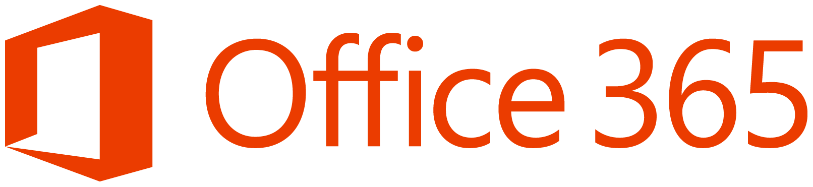
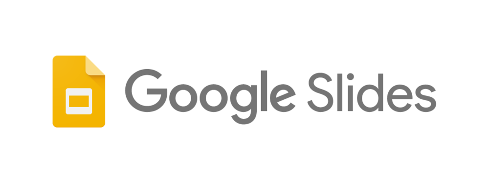

{% set title = "Uledger Integrations Page" %}
<!DOCTYPE html>
<html lang="en">
  <head>
    {% include "partial/_meta.html" %}
  </head>

  <body data-smooth-scroll-offset="77">
    {% include "partial/_nav.html" %}
    <div class="main-container">
      <section class="cover imagebg text-center height-50" data-overlay="5">
        <div class="background-image-holder">
          
        </div>
        <div class="container pos-vertical-center">
          <div class="row">
            <div class="col-md-9 col-lg-8">
              <h1><strong>Integrations</strong></h1>
            </div>
          </div>
        </div>
      </section>
      <section
        class="switchable feature-large switchable--switch bg--secondary"
      >
        <div class="container">
          <div class="row justify-content-around">
            <div class="col-md-5">
              <h2>ULedger Integrations</h2>
              
              
              
              
            </div>
            <div class="col-md-8 col-lg-7">
              <div class="switchable_text">
                <p class="lead">
                  The following applications have already been integrated with ULedger. For more information on any of the following, contact ULedger by clicking here. Don't see what you need, contact ULedger today.
                </p>
                <p class="lead">
                  ULedger’s email solution seamlessly integrates with Office365TM, ExchangeTM, GmailTM. In addition to providing the inherent benefits of a blockchain tamper-proof ledger, ULedger customers possess a redundant and legally defensible audit trail of their email communication. Additional benefits include meeting regulatory compliance, preserving data, and enhancing business continuity.
                </p>
                <p class="lead">
                  ULedger integrates with Google’s web-based office suite of products including Google SheetsTM and Google SlidesTM. Enjoy the benefit of improved 3rd party audit trail of the complete life cycle of documents, information, and document edits.
                </p>
                <p class="lead">
                  ULedger also integrates with Microsoft ExcelTM.  ULedger provides the ability to create a 3rd party, tamper-proof, audit trail for the entire spreadsheet or the option to track every single edit.
                </p>
                <p class="lead">
                  ULedger integrates with popular file hosting, online backup, and file sharing services such as DropboxTM and BoxTM. This development tool features the technology to deliver a 3rd party tamper-proof audit trail of the complete life cycle of files and documents.
                </p>
              </div>
            </div>
          </div>
        </div>
      </section>
      {% include "partial/_footer.html" %}
    </div>
    {% include "partial/_scripts.html" %}
  </body>
</html>
